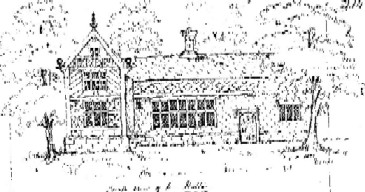
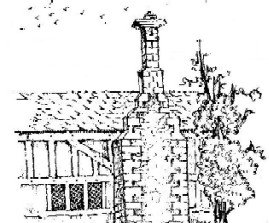
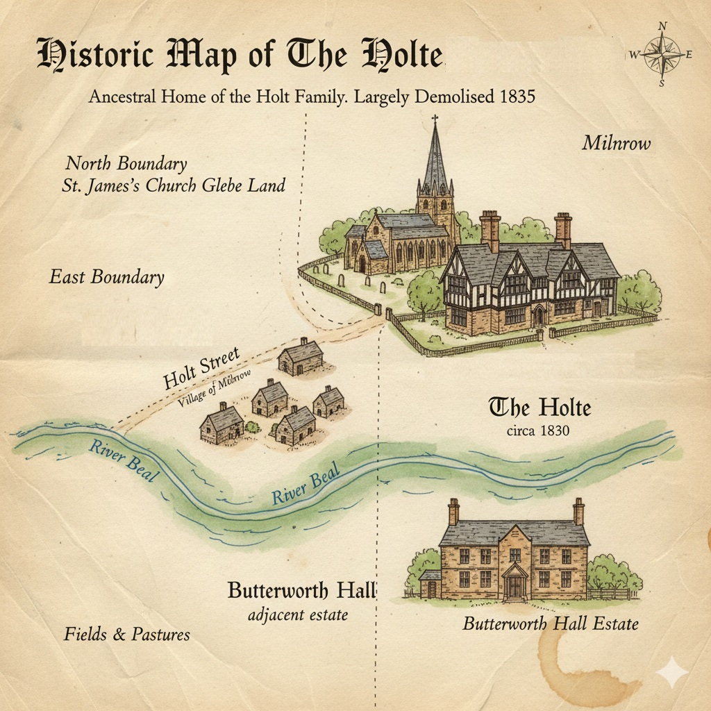

The Holte

South view to the left
The Holte in the township of Butterworth, near Milnrow Church, was originally the residence of the family of that
name, who afterwards resided at Stubley near Littleborough and became extinct at Castleton Hall in 1713. The remains
of this once spacious house are shown here as they existed before alterations were made around 1834.
The Holt family are recorded as having lived in The Holte as far back as 1386. The
early tree provides a summary.

North view to the left
In 1889 it was owned by the representatives of Richard Orford Holt Esq. It had been purchased back into the Holt
family by Robert Holt of Chamberhouse around 1829 (the exact date is unclear, but after 1810) for £4,000. There were
44 acres of land. It was considered very cheap at £100 an acre and valued at £9,000 around 1858.
It was originally a half‑timber house, once common in the district. The old building was used mainly as a farmhouse
and was almost entirely pulled down in 1835.

A plan of Milnrow showing Holt Street near Butterworth Hall